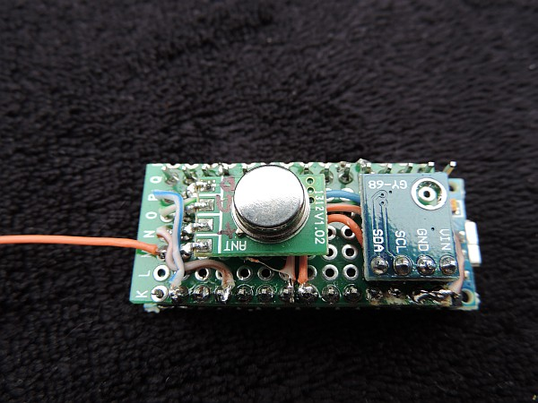

This page describes how to make a LamPI sensor node with just a few basic components: An Arduino Nano, a 433MHz transmitter and a sensor (and a soldering ion, a board and some other small stuff). The following connections need be made:
to be provided
This is the version 1 of the Arduino sensor. As you can see on the picture below, the HTU21D sensor use is the big one, and the board has more space than necessary.
Above you see the first version of the Arduino sensor that I made. It contains the Arduinom the sender on the top rigth and a HTU21D temperature and humidity sensor. As it was possible to make the sensor a lot smaller I made version 2 which is found on the top of the page.
As you can see there is room for another sensor, o remove some board space.
The Arduino Nano board is small enough to make a nice 433MHz sensor device to capture on-board temperature, humidity or airpressure for example and send it over the air to one of the Raspberry slaves or the master.


Version 3 is almost the same as version 2. Only the Arduino is not soldered but instead it is mounted on headers. In principle this allows the transmitter and sensor to be placed inside the space between the Arduino, the headers and a piece of board.
I made another version of the Arduino Sensor


The transmitter and the sensor are soldered between the headers and the perf board. The Arduino is removed from its headers for the picture. The green wire is the 16.8 cm antenna which is curled to fit in any type of housing.
Version 4 was designed to b a low-power version. The Arduino Sensor node will only power one or two sensor devices and once every minute report these values to the central gateway. For such purposes we should NOT need a high-power device. So I chose the Arduino Mini Pro node on 3.3V, which would because of its lower power and lower clockspeed work on batteries for an extended amount of time.
As an option: We could use NRF24L01 transceivers which operate on 3.3V and use the 2.4GHz band. But only if the combination works and uses less power that any ordinary combination on 433MHz.
The message format of messages exchanged between the Raspberry and the Arduino is defined on the following page(s). As sensors only have an active transmitter to send sensor values to the host, the messae format is very simple. For the moment we use the WT440h protocol (and the variant to code airpressure) as the basis message format.
We do no checking or further processing on the Arduino Sensor side, just transfer the measured values back to the server.
The new green BMP180 and the HTU21D board do have the same pin lay-out. Therefore in principle it ispossibel to stack the two boards with a little header space in between. This would mean simple wiring and two sensors on one board. The softwware would be able to deal with this and send two sensor readings with the same address (specified in the .h file at compile time) but with 2
{kind=link}
{kind=link}